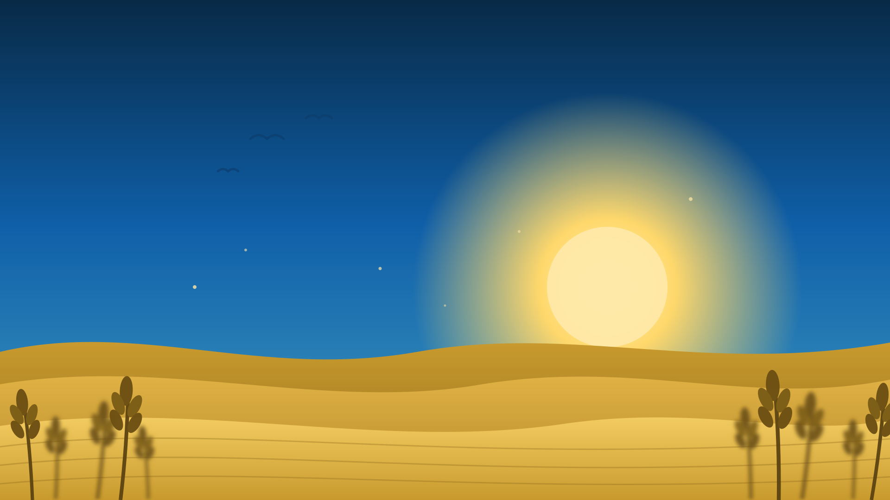
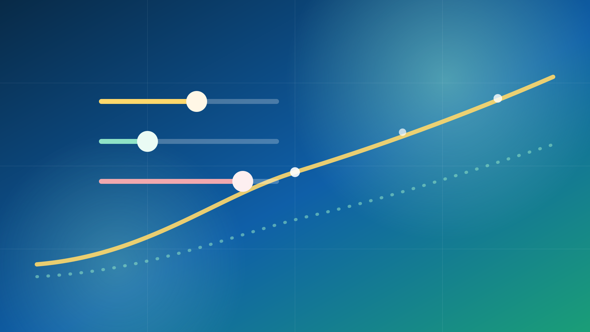

Start Exploring
Four ways into the data
Each section is its own page — pick where to begin.

World & Patterns
An animated world map of 14 years of hunger, and the patterns behind it.
Explore →

Country Story
Search any country: its journey, its 2024–2028 outlook, and why.
Find a country →

Forecast 2024–2028
All 163 forecasts, sortable — next year and five years ahead.
See forecasts →

What-If Lab
Live models in your browser — change conditions, watch risk shift.
Run a scenario →